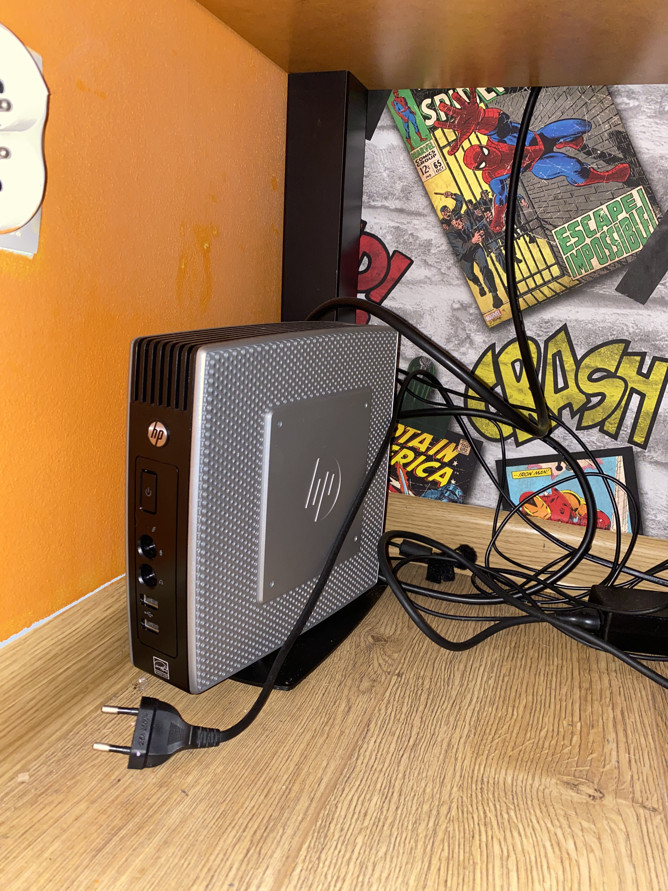

Home
Blog
My Computers!
My Phones!
About Me
So, that's mine Msi GF 63 RCS,
it's one of my main machines and i litrally love it! It has got 16GB of ram,
256 Toshiba SSD, Intel Core i5 8th gen and GTX 1050.
It has got dual monitor setup.
Here is my 13 inch 2017 MacBook Pro.
So, that's my daily driver i use it a lot and i love it a lot!
It has got 8GB of ram, i5 7th gen, Intel iris plus 640 1536 MB,
and a 256 GB Apple SSD
Here is my old mid 2010 MacBook Pro.
It was my first MacBook ever and i really enjoyed it!
It has got 256GB Crucial SSD, 4GB of ram, Some intel graphics 256MB and core2duo!
Hah, i almost forgot, it is running MacOS High Sierra.

Well, it's a terminal but i will include it in this category.
So, it was my backup PC, It has got 2GB of ram, 16Gb SSD and Viaeden i think.
It had Windows 7 but i tried to install Windows 8.1 on it and it didn't worked.
For now it hasn't got any OS, but i'll try fixing it.
So, this is my late 2009 iMac that i got for my bd!
It has got great sounding speakers and beautifull screen!
I plan install Catalina patcher on it but for now it is not installed because of HDD.
Yep! I've got the first Intel black MacBook!
Um, so it has got 2GB of ram and intel processor!
Also, it's running MacOS Snow Leopard
Um, so here is my new terminal, it's Hp t620.
It has got 4GB of ram and an AMD processor, not like ViaEden in the old one.
It's running Windows 7 Embedded.